Podręczny i zwięzły przewodnik
Prawa autorskie
Copyright © 2010-2015. Ten dokument jest chroniony prawem autorskim. Lista autorów znajduje się poniżej. Możesz go rozpowszechniać oraz modyfikować na zasadach określonych w General Public License (http://www.gnu.org/licenses/gpl.html), wersja 3 lub późniejsza, albo określonych w Creative Commons Attribution License (http://creativecommons.org/licenses/by/3.0/), wersja 3.0 lub późniejsza.
Wszystkie znaki towarowe użyte w tym dokumencie należą do ich właścicieli.
Współtwórcy
David Jahshan, Phil Hutchinson, Fabrizio Tappero, Christina Jarron, Melroy van den Berg.
Tłumaczenie
Kerusey Karyu <keruseykaryu@o2.pl>, 2014-2016.
Kontakt
Wszelkie zauważone błędy, sugestie lub nowe wersje dotyczące tego dokumentu prosimy kierować do:
-
W sprawie dokumentacji: https://github.com/KiCad/kicad-doc/issues
-
W sprawie oprogramowania: https://bugs.launchpad.net/kicad
-
W sprawie tłumaczeń interfejsu użytkownika (i18n): https://github.com/KiCad/kicad-i18n/issues
Data publikacji
16 maja 2015
1. Wprowadzenie do programu KiCad
KiCad EDA Suite to oprogramowanie narzędziowe przeznaczone do tworzenia schematów elektronicznych oraz obwodów drukowanych PCB. Pod jednym prostym interfejsem KiCad łączy elegancki zespół następujących, samodzielnych programów:
| Nazwa programu | Opis | Rozszerzenia plików |
|---|---|---|
KiCad |
Menadżer projektu |
*.pro |
Eeschema |
Edytor Schematów (zarówno schematów jak i symboli) |
*.sch, *.lib, *.net |
CvPcb |
Narzędzie do przypisywania footprintów |
*.net |
Pcbnew |
Edytor Obwodów Drukowanych |
*.kicad_pcb, *.kicad_mod |
GerbView |
Przeglądarka plików Gerber i Excellon |
*.g\*, *.drl, itp. |
Bitmap2Component |
Narzędzie do konwersji bitmap na symbole lub footprinty |
*.lib, *.kicad_mod, *.kicad_wks |
PCB Calculator |
Kalkulator do obliczania komponentów, szerokości ścieżek, odległości między ścieżkami i wiele innych… |
Brak |
Pl Editor |
Edytor Układu Strony |
*.kicad_wks |
|
Zapamiętaj
|
Lista rozszerzeń plików nie jest kompletna i zawiera tylko podzbiór plików, które wspiera program KiCad. Służy ona jako pomoc przy zrozumieniu postaw działania każdej aplikacji wchodzącej w skład pakietu KiCad EDA Suite. |
KiCad można uznać za wystarczająco dojrzałe oprogramowanie, by wykorzystać go do tworzenia i utrzymywania złożonych projektów obwodów drukowanych.
KiCad nie stwarza żadnego ograniczenia co do rozmiaru PCB i może z łatwością obsługiwać do 32 warstw miedzi, do 14 warstw technicznych oraz do 4 warstw pomocniczych. KiCad może tworzyć też wszystkie pliki niezbędne do tworzenia obwodów drukowanych: pliki Gerber dla foto-ploterów, pliki wierceń, pliki z lokalizacją elementów i wiele więcej.
Będąc oprogramowaniem otwartym (na licencji GPL), KiCad stanowi idealne narzędzie dla projektów zorientowanych w kierunku urządzeń o charakterze Open-Source.
W sieci Internet strona domowa programu KiCad znajduje się pod adresem:
1.1. Pobieranie i instalowanie programu KiCad
KiCad uruchamia się w systemach GNU/Linux, Apple OS X oraz Windows. Najbardziej aktualne instrukcje oraz linki do pobrania programu KiCad można znaleźć pod adresem:
|
Ważne
|
Edycje stabilne programu KiCad są publikowane co jakiś czas zgodnie z polityką wydawniczą: KiCad Stable Release Policy. Nowe funkcje są ciągle dodawane do gałęzi rozwojowej. Jeśli użytkownik chce skorzystać z tych nowych funkcji i pomóc przy ich testowaniu, należy pobrać najnowszy pakiet edycji testowej Nightly przewidziany dla używanej platformy. Edycje testowe mogą wprowadzać błędy, takie jak uszkodzenie plików, generowanie niepoprawnych plików Gerber, itp.; ale celem Zespołu Rozwojowego programu KiCad jest utrzymać gałąź rozwojową tak użyteczną, jak to tylko możliwe w trakcie rozwijania nowych funkcji. |
1.2. W systemie GNU/Linux
Stabilne wydania programu KiCad można znaleźć w menadżerach pakietów wielu dystrybucji jako kicad i kicad-doc. Jeśli używana dystrybucja nie dostarcza najnowszej wersji stabilnej, proszę skorzystać z instrukcji poniżej w celu pozyskania jednej z wersji testowych.
Wersje niestabilne są budowane na podstawie najbardziej aktualnego kodu źródłowego. Mogą czasami zawierać błędy, które mogą uszkadzać pliki, generować błędne pliki Gerber, itp.; lecz ogólnie są to wersje stabilne posiadające najnowsze funkcje.
W systemie Ubuntu, najprostszą metodą instalacji wersji testowych programu KiCad (Nightly) jest skorzystanie z PPA oraz Aptitude. Wpisz w konsoli następujące polecenia:
sudo add-apt-repository ppa:js-reynaud/ppa-kicad
sudo aptitude update && sudo aptitude safe-upgrade
sudo aptitude install kicad kicad-doc-en
W systemach opartych na dystrybucji Fedora najprosztszą metodą instalacji wersji testowych jest użycie copr. By zainstalować program KiCad za pomocą copr należy wydać następujące polecenia:
sudo dnf copr enable mangelajo/kicad
sudo dnf install kicad
Alternatywnie, możesz pobrać i zainstalować wersję pre-kompilowaną KiCad-a lub bezpośrednio pobrać kod źródłowy, skompilować go oraz zainstalować z niego KiCad-a.
1.3. W systemie Apple OS X
Wersje stabilne programu KiCad dla systemu OS X można znaleźć pod adresem: http://downloads.kicad-pcb.org/osx/stable/
Wersje niestabilne są budowane na podstawie najbardziej aktualnego kodu źródłowego. Mogą czasami zawierać błędy, które mogą uszkadzać pliki, generować błędne pliki Gerber, itp.; lecz ogólnie są to wersje stabilne posiadające najnowsze funkcje.
Wersje testowe można znaleźć pod adresem: http://downloads.kicad-pcb.org/osx/
1.4. W systemie Windows
Wersje stabilne programu KiCad dla systemu Windows można znaleźć pod adresem: http://downloads.kicad-pcb.org/windows/stable/
Wersje niestabilne są budowane na podstawie najbardziej aktualnego kodu źródłowego. Mogą czasami zawierać błędy, które mogą uszkadzać pliki, generować błędne pliki Gerber, itp.; lecz ogólnie są to wersje stabilne posiadające najnowsze funkcje.
Dla systemu Windows można skorzystać z wersji testowych dostępnych pod adresem: http://downloads.kicad-pcb.org/windows/
1.5. Wsparcie
Jeśli masz pomysł, chciałbyś skomentować lub zadać pytanie, albo po prostu potrzebujesz pomocy:
-
Dołącz do kanał IRC #kicad na Freenode
2. Schemat postępowania
Pomimo podobieństw do innego oprogramowania narzędziowego do tworzenia obwodów drukowanych, KiCad charakteryzuje się unikalnym podejściem do projektowania, w którym komponenty na schemacie i footprinty są niezależne. Jest to często tematem do dyskusji na internetowych forach dyskusyjnych.
2.1. Cykl postępowania
Cykl postępowania w przypadku programu KiCad składa się z dwóch głównych zadań: tworzenie schematu i trasowanie płytki. Obie biblioteki: komponentów oraz footprintów są niezbędne dla obu tych zadań. KiCad posiada sporo komponentów oraz foorptintów, a także oferuje narzędzia niezbędne do tworzenia nowych.
Na rysunku poniżej można zobaczyć schemat postępowania reprezentujący proces tworzenia kompletnego projektu w programie KiCad. Rysunek wyjaśnia jakie kroki należy podjąć i w jakiej kolejności należy je wykonać. Dodatkowe ikony ukazują narzędzia jakich należy użyć.

By uzyskać więcej informacji na temat tworzenia symboli należy zajrzeć do rodziału Tworzenie symboli w programie KiCad. Informacje na temat tworzenia footprintów można zaś znaleźć w rozdziale zatytułowanym Tworzenie footprint-ów.
W poniższej witrynie:
można znaleźć przykład użycia narzędzia do szybkiego projektowania komponentów bibliotecznych dla programu KiCad. Aby uzyskać więcej informacji na temat Quicklib, przejdź do sekcji nazwanej: Tworzenie symboli za pomocą Quicklib.
2.2. Renumeracja elementów oraz numeracja wsteczna
Gdy schemat został już w pełni opracowany, następnym krokiem jest przeniesienie go do PCB. Często zdarza się, że trzeba dodać do projektu dodatkowe komponenty lub zmiany w istniejących, zmienić nazwy sieci, itp. Można to zrobić na dwa sposoby: z wykorzystaniem narzędzi do re-numeracji elementów lub numeracji wstecznej.
Numeracja wsteczna to proces wysyłania zmian w obwodzie drukowanym z powrotem do odpowiadającemu mu schematu. Niektórzy nie uważają by ta szczególna cecha programu była szczególnie użyteczna.
Re-numeracja elementów to proces przesyłania zmian w schemacie do odpowiadającego mu obwodu PCB. Jest to fundamentalna funkcja, ponieważ należy ją wykonać przynajmniej raz by zaimportować dane ze schematu na PCB. Później, proces re-numeracji pozwala na przesłanie ewentualnych zmian w schemacie tak, by PCB było zgodne ze schematem. Re-numeracja elementów została omówiona w rozdziale zatytułowanym Re-numeracja elementów w programie KiCad.
3. Rysowanie schematów
W tej sekcji nauczymy się rysować schematy za pomocą narzędzi zawartych w KiCad EDA.
3.1. Używanie Eeschema
-
W systemie Windows uruchom kicad.exe. W systemie Linux wpisz kicad w oknie konsoli. Znajdziesz się wtedy w głównym oknie zarządcy projektu programu KiCad. Z tego miejsca masz dostęp do ośmiu samodzielnych narzędzi: Eeschema, Edytor bibliotek symboli, Pcbnew, Edytor bibliotek footprintów, GerbView, Bitmap2Component, PCB Calculator oraz Pl_Editor. Spójrz na cykl postępowania by rozeznać się do czego poszczególne narzędzia są używane.
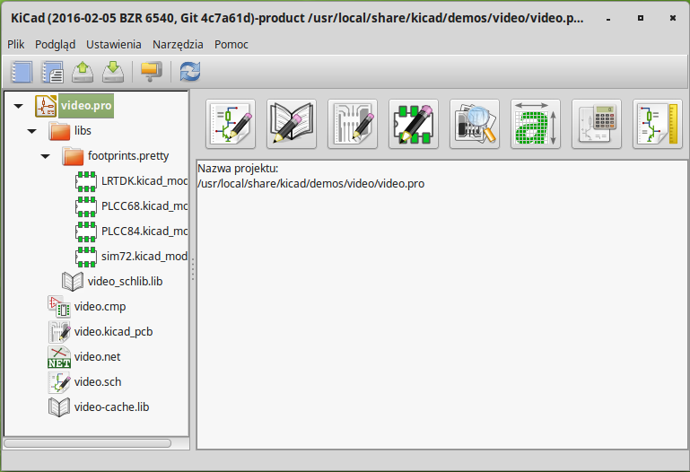 -
Utwórz nowy projekt: Plik → Nowy projekt → Utwórz nowy projekt. Nazwij plik projektu jako tutorial1. Plik projektu zostanie automatycznie zapisany z rozszerzeniem ".pro". KiCad zaproponuje utworzenie nowego folderu dla projektu, kliknij "Tak" by potwierdzić. Wszystkie pliki należące do projektu będą zapisywane w tym folderze.
-
Rozpocznijmy od utworzenia schematu. Uruchom program do edycji schematów Eeschema,
 . Jest to pierwszy klawisz licząc od lewej.
. Jest to pierwszy klawisz licząc od lewej.
-
Kliknij w ikonę Ustawienia strony
 na górnym pasku narzędzi. Ustaw Rozmiar Strony na A4
oraz wpisz w polu Tytuł Tutorial 1. Najprawdopodobniej zauważyłeś, że
można wpisać więcej informacji, na razie jednak to wystarczy. Kliknij
OK. Informacja ta zostanie przeniesiona na arkusz schematu do ramki
znajdującej się w prawym dolnym narożniku. Możesz użyć rolki myszy by go
powiększyć. Zapisz cały projekt schematu: Plik → Zapisz projekt
schematu
na górnym pasku narzędzi. Ustaw Rozmiar Strony na A4
oraz wpisz w polu Tytuł Tutorial 1. Najprawdopodobniej zauważyłeś, że
można wpisać więcej informacji, na razie jednak to wystarczy. Kliknij
OK. Informacja ta zostanie przeniesiona na arkusz schematu do ramki
znajdującej się w prawym dolnym narożniku. Możesz użyć rolki myszy by go
powiększyć. Zapisz cały projekt schematu: Plik → Zapisz projekt
schematu
-
Teraz możemy już wstawić pierwszy komponent. Kliknij w ikonę Dodaj element
 na prawym pasku
narzędzi. To samo możesz osiągnąć korzystając z klawisza skrótu polecenia
Dodaj element: klawisza (a).
Zapamiętaj
na prawym pasku
narzędzi. To samo możesz osiągnąć korzystając z klawisza skrótu polecenia
Dodaj element: klawisza (a).
ZapamiętajMożesz przejrzeć listę dostępnych skrótów klawiszowych naciskając klawisz ?. -
Kliknij na środku arkusza. Pojawi się okno Wybór symbolu. Zaczniemy od wstawienia rezystora. Przeszukaj / odfiltruj listę szukając R od słowa Rezystor. Mogłeś zauważyć, że ponad nazwą symbolu pojawiła się nazwa device. Nazwa ta to nazwa biblioteki gdzie znajduje się wyszukany symbol, zawierająca wiele użytecznych i podstawowych symboli.
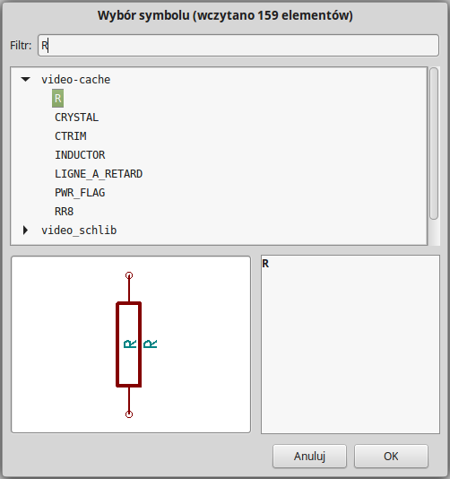 -
Kliknij dwukrotnie na rezystor R. Spowoduje to zamknięcie okna Wybierz symbol i zostaniesz znów przeniesiony do twojego arkusza schematu. Umieść symbol na arkuszu klikając w miejscu gdzie chcesz go umieścić.
-
Kliknij na lupę by powiększyć widoczny obszar wokół tego komponentu. Alternatywnie, możesz użyć kółka myszy by powiększyć lub pomniejszyć widoczny obszar. Wciśnij kółko (klaiwsz centralny) by wywołać funkcję panoramowania w pionie lub poziomie.
-
Przesuń kursor myszy nad komponent R oraz naciśnij klawisz r. Zauważ, w jaki sposób komponent został obrócony. Nie musisz klikać na komponent by móc go obrócić.
ZapamiętajJeśli kursor myszy znajduje się nad polem Oznaczenie (R) lub polem Wartość (R?), pojawi się menu. Często będziesz oglądał menu Precyzowanie wyboru w programie KiCad, które pozwala na pracę nad obiektami, które mogą zachodzić na siebie. W tym przypadku, należy wskazać programowi KiCad, że akcja będzie dotyczyła Komponentu …R…. -
Kliknij mniej więcej w środku komponentu oraz wybierz polecenie Edytuj element → Wartość. Możesz osiągnąć ten sam rezultat przesuwając kursor myszy nad komponent, a następnie nacisnąć klawisz v. Alternatywnie, klawisz e przeniesie cię do bardziej zaawansowanego okna *Edycja elementu. Zauważ, że z pomocą prawego klawisza myszy otwarte menu podręczne wskazuje na możliwe klawisze skrótów wywołujące poszczególne akcje.
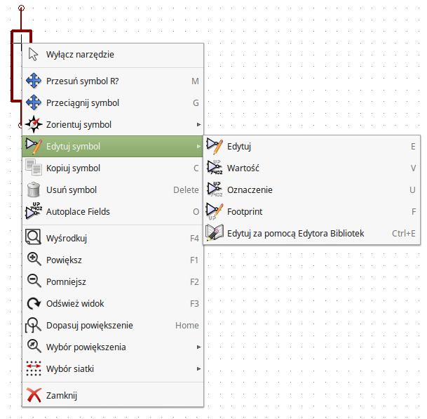 -
Pojawi się okno Edytuj pole Wartość. Zamień bieżącą wartość R na 1k. Kliknij OK.
ZapamiętajNie zmieniaj pola Odniesienie (R?), zrobimy to później z pomocą automatu. Wartość wewnątrz rezystora od teraz powinna wynosić 1k. 
-
By umieścić następny rezystor, po prostu kliknij w miejscu gdzie chcesz go umieścić. Ponownie pojawi się okno Wybór symbolu.
-
Rezystor jaki wybrałeś poprzednim razem teraz jest już na twojej liście z historią wyboru jako R. Kliknij OK i umieść komponent.
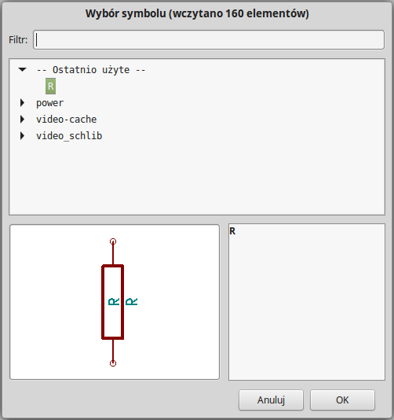 -
W przypadku gdy popełnisz błąd i będziesz chciał skasować komponent, kliknij prawym klawiszem na komponencie oraz kliknij Usuń symbol. To spowoduje usunięcie komponentu ze schematu. Alternatywnie, możesz najechać kursorem na komponent który chcesz usunąć oraz nacisnąć klawisz Del.
ZapamiętajMożesz zmienić nazwę dowolnego z domyślnych klawiszy skrótów wybierając polecenie Ustawienia → Skróty klawiszowe → Edycja skrótów klawiszowych. Wszelkie modyfikacje zostaną natychmiast zapisane. -
Możesz również powielić komponent znajdujący się już na twoim arkuszu, przez najechanie na niego kursorem i wciskając klawisz c. Kliknij teraz gdzie chciałbyś umieścić nowy, zduplikowany komponent.
-
Kliknij prawym klawiszem na drugi rezystor. Wybierz Przeciągnij symbol. Przenieś komponent i kliknij lewym klawiszem by go upuścić. Taką samą funkcjonalność możesz uzyskać najeżdżając na komponent i naciskając klawisz g. Użyj klawisza r by obrócić komponent. Klawisz x oraz klawisz y pozwalają na przerzucanie elementu w pionie lub w poziomie.
ZapamiętajPrawo-klik → Przesuń symbol (odpowiednik klawisza m) jest również wartościową opcją przeznaczoną do przesuwania czegokolwiek wokół, jednak lepiej jest używać jej tylko dla etykiet komponentów oraz komponentów mających być dopiero co połączonych. Zobaczymy później dlaczego jest to takie ważne. -
Dokonaj edycji drugiego rezystora najeżdżając na niego i wciskając klawisz v. Zamień R na 100. Możesz usunąć dowolną edycję jaką wykonałeś za pomocą klawisza Ctrl+z.
-
Zmień gęstość siatki. Może już zauważyłeś, że wszystkie komponenty na schemacie ustawiają się według wielkiej rozpiętej siatki. Możesz bardzo łatwo zmienić gęstość siatki klikając Prawo-klik → Wybór siatki. Zasadniczo, rekomendowane jest używanie siatki o rozmiarze 50.0 milsów dla schematów.
-
Dodamy teraz komponent z biblioteki, która nie znajduje się w domyślnym szablonie projektu. Z menu wybierz Ustawienia → Biblioteki symboli oraz kliknij Dodaj w sekcji Pliki bibliotek symboli.
-
Musisz ustalić gdzie zainstalowano domyślne biblioteki programu KiCad w swoim komputerze. Szukaj folderu library zawierającego mnóstwo plików z rozszerzeniem .dcm oraz .lib. Sprawdź lokacje C:\Program Files (x86)\KiCad\share\ (w systemie Windows) oraz /usr/share/kicad/library/ (w systemie Linux). Gdy znajdziesz taki folder, wybierz go i dodaj bibliotekę microchip_pic12mcu oraz zamknij okno.
-
Powtórz kroki z dodawaniem komponentów, tym razem wybierając bibliotekę microchip_pic12mcu zamiast biblioteki device oraz pobierz z niej komponent PIC12C508A-I/SN.
-
Najedź myszą na mikrokontroler. Naciśnij klawisz y lub klawisz x na klawiaturze. Zauważ w jaki sposób komponent zostaje przerzucany w osi X lub osi Y. Naciskaj klawisze ponownie by wrócić do jego oryginalnego położenia.
-
Powtórz kroki z dodawaniem komponentów, tym razem wybierając bibliotekę device a z niej komponent LED.
-
Ułóż komponenty na twoim schemacie tak jak pokazano poniżej.

-
W tej chwili musimy stworzyć nowy komponent MYCONN3 dla naszego trójpinowego złącza. Możesz przeskoczyć do rozdziału zatytułowanego Tworzenie symboli w programie KiCad by nauczyć się jak utworzyć ten komponent od zera i wrócić tu by kontynuować tworzenie płytki.
-
W tej chwili możesz już wstawić świeżo utworzony komponent. Naciśnij klawisz a i wybierz MYCONN3 w bibliotece myLib.
-
Identyfikator komponentu J? pojawi się pod symbolem MYCONN3. Jeśli chcesz zmienić jego położenie, kliknij prawym klawiszem na J? oraz kliknij w Przesuń pole (odpowiednik klawisza m). Może być również pomocne przybliżenie widoku przed/podczas wykonywania tego kroku. Zmień położenie J? tak by tekst znalazł się pod komponentem tak jak na obrazku. Etykiety mogą być przesuwane wokół, tyle razy ile zechcesz.

-
Nadszedł czas by umieścić na schemacie symbole zasilania. Kliknij w ikonę Dodaj port zasilania
 na prawym panelu narzędziowym. Alternatywnie, naciśnij klawisz
p. W oknie wyboru komponentów przewiń na dół oraz wybierz VCC z
biblioteki power. Kliknij OK.
na prawym panelu narzędziowym. Alternatywnie, naciśnij klawisz
p. W oknie wyboru komponentów przewiń na dół oraz wybierz VCC z
biblioteki power. Kliknij OK.
-
Kliknij w okolicy górnego pinu rezystora 1k by umieścić tam element VCC. Kliknij w okolicy wyprowadzenia VDD mikrokontrolera. W polu Ostatnio użyte elementy wybierz VCC i umieść go w okolicy wyprowadzenia VDD. Powtórz ten proces ponownie i wstaw element VCC powyżej wyprowadzenia VCC komponentu MYCONN3.
-
Powtórz kroki z dodawaniem komponentów, ale tym razem wybierz element GND. Umieść element GND pod wyprowadzeniem GND komponentu MYCONN3. Umieść inny element GND na prawo od wyprowadzenia VSS mikrokontrolera. Twój schemat powinien teraz wyglądać mniej więcej tak:

-
Następnym krokiem będzie łączenie naszych komponentów. Kliknij na ikonę Dodaj połączenie
 na prawym panelu.
Zapamiętaj
na prawym panelu.
ZapamiętajNie wybierz przypadkiem polecenia Dodaj magistralę, które występuje bezpośrednio pod tą ikoną, ale ma inny kolor i szerokość. Rozdział Magistrale w programie KiCad wyjaśni później jak używać magistral. -
Kliknij na małe kółeczko na końcu wyprowadzenia numer 7 mikrokontrolera oraz kliknij na to samo kółeczko na końcu wyprowadzenia numer 2 diody LED. Możesz przybliżyć widok podczas wstawiania tego połączenia.
ZapamiętajJeśli chcesz przesunąć połączone elementy, ważne jest by do tego celu użyć klawisza g (przeciągnij) a nie klawisza m (przesuń). Użycie opcji Przeciągnij symbol zachowa połączenia przesuwanego elementu. Jeśli zapomniałeś już jak przesuwać elementy spójrz jeszcze raz na krok numer 24. 
-
Powtórz ten proces oraz połącz wszystkie inne komponenty tak jak pokazano poniżej. By przerwać łączenie po prostu kliknij dwukrotnie. Gdy łączysz symbole VCC i GND, połączenie powinno dotknąć dolnej części symbolu VCC oraz środka na górze w symbolu GND. Zobacz poniższy obrazek.
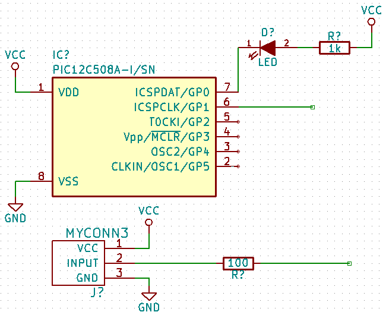 -
Poznamy teraz alternatywny sposób tworzenia połączeń z użyciem etykiet. Wybierz narzędzie do stawiania etykiet Dodaj nazwę sieci (lokalna) klikając w ikonę
 na prawym pasku narzędzi. Możesz także użyć klawisza l.
na prawym pasku narzędzi. Możesz także użyć klawisza l.
-
Kliknij w środku połączenia biegnącego z wyprowadzenia numer 6 mikrokontrolera. Nazwij tą etykietę INPUT.
-
Postępuj zgodnie z tą procedurą oraz wstaw inną etykietę na linii na prawo od rezystora 100R. Nazwij ją również INPUT. Dwie etykiety, posiadające taką samą nazwę, tworzą niewidoczne połączenie pomiędzy wyprowadzeniem numer 6 procesora PIC a rezystorem 100R. Jest to wygodna technika łączenia w skomplikowanych projektach, gdzie rysowanie połączeń jako oddzielnych linii spowodowałoby, że schemat stałby się nieczytelny. By wstawić etykietę nie potrzebujesz rysować części połączenia, możesz po prostu dopiąć etykietę do wyprowadzenia.
-
Etykiety mogą być także użyte do prostego oznaczania połączeń w celach informacyjnych. Umieść etykietę na wyprowadzeniu numer 7 procesora PIC. Wpisz nazwę uCtoLED. Nazwij połączenie pomiędzy rezystorem a diodą LED jako LEDtoR. Nazwij połączenie pomiędzy MYCONN3 a rezystorem jako INPUTtoR.
-
Nie musisz dodawać etykiet do sieci VCC oraz GND, ponieważ ich etykiety są tworzone domyślnie z nazw portów zasilania, do których są one połączone.
-
Poniżej możesz zobaczyć jak powinien wyglądać końcowy rezultat.

-
Zajmijmy się teraz wyprowadzeniami niepołączonymi. Każde z wyprowadzeń albo połączeń, które nie są z niczym połączone, generuje ostrzeżenie podczas testu poprawności projektu. By zapobiec tym ostrzeżeniom możesz poinstruować program, że jest to celowe działanie i oflagować te elementy jako niepołączone.
-
Kliknij na ikonę 'Dodaj flagę “Nie połączone”
 na prawym pasku
narzędzi. Kliknij na kółeczka przy pinach 2, 3, 4 oraz 5. Pojawi się znak X
co oznacza, że brak połączenia jest zamierzony.
na prawym pasku
narzędzi. Kliknij na kółeczka przy pinach 2, 3, 4 oraz 5. Pojawi się znak X
co oznacza, że brak połączenia jest zamierzony.

-
Niektóre z komponentów mają wyprowadzenia zasilania, które są niewidoczne. Możesz sprawić by były widoczne klikając na ikonę Pokaż ukryte piny
 na lewym pasku
narzędzi. Ukryte piny zasilania zostają automatycznie połączone do
właściwych sieci VCC oraz GND. Mówiąc ogólnie, powinieneś również spróbować
nie tworzyć ukrytych wyprowadzeń zasilania.
na lewym pasku
narzędzi. Ukryte piny zasilania zostają automatycznie połączone do
właściwych sieci VCC oraz GND. Mówiąc ogólnie, powinieneś również spróbować
nie tworzyć ukrytych wyprowadzeń zasilania.
-
Teraz wymagane będzie dodanie flag Power Flag by określić, że zasilanie będzie dostarczone gdzieś z zewnątrz. Wciśnij klawisz a, wybierz Wyświetl wszystkie, kliknij dwukrotnie na bibliotekę power oraz wyszukaj symbol PWR_FLAG. Wstaw dwa takie symbole. Połącz jeden z GND, a drugi z VCC, tak jak pokazano niżej.
 Zapamiętaj
ZapamiętajPozwoli to na uniknięcie klasycznego ostrzeżenia przy sprawdzaniu schematu: Ostrzeżenie Wyprowadzenie power_in nie jest sterowany (Sieć xx) -
Czasem dobrze jest dodać parę komentarzy na schemacie. By dodać komentarz użyj polecenia Dodaj tekst-komentarz (grafika), ikona tego narzędzia
 znajduje się na prawym
pasku narzędzi.
znajduje się na prawym
pasku narzędzi.
-
Każdy z komponentów musi posiadać unikalny identyfikator. Rzeczywiście, wiele z naszych komponentów dalej jest nazwanych R? lub J?. Nadawanie identyfikatorów może być wykonane automatycznie klikając w ikonę Numeruj elementy na schemacie
 na górnym pasku narzędzi.
na górnym pasku narzędzi.
-
W oknie Numeruj schemat, wybierz Użyj całego schematu oraz kliknij na przycisk Numeruj. Kliknij OK by potwierdzić wyskakującą informację oraz kliknij na Zamknij. Zauważ, że wszystkie znaki ? zostały zamienione na liczby. Każdy identyfikator jest teraz unikalny. W naszym przykładzie elementy zostały nazwane R1, R2, U1, D1 i J1.
-
Możemy teraz sprawdzić nasz schemat czy nie ma w nim podstawowych błędów. Kliknij w ikonę Kontrola reguł projektowych
 . Następnie kliknij na przycisk
Uruchom. Raport poinformuje cię o wszystkich błędach lub ostrzeżeniach,
takich jak na przykład niepołączone wyprowadzenia. Powinieneś nie mieć
żadnych błędów lub ostrzeżeń. W przypadku błędów lub ostrzeżeń, na schemacie
pojawia się mała zielona strzałka w miejscu gdzie został wykryty błąd lub
ostrzeżenie. Zaznacz Utwórz plik raportu i wciśnij klawisz Uruchom
ponownie by otrzymać więcej informacji o błędach.
Zapamiętaj
. Następnie kliknij na przycisk
Uruchom. Raport poinformuje cię o wszystkich błędach lub ostrzeżeniach,
takich jak na przykład niepołączone wyprowadzenia. Powinieneś nie mieć
żadnych błędów lub ostrzeżeń. W przypadku błędów lub ostrzeżeń, na schemacie
pojawia się mała zielona strzałka w miejscu gdzie został wykryty błąd lub
ostrzeżenie. Zaznacz Utwórz plik raportu i wciśnij klawisz Uruchom
ponownie by otrzymać więcej informacji o błędach.
ZapamiętajJeśli pojawi się ostrzeżenie "Nie znaleziono domyślnego edytora, musisz go wybrać", spróbuj ustawić ścieżkę do niego na c:\windows\notepad.exe (w systemie Windows) lub /usr/bin/gedit (w systemie Linux). -
Schemat jest już ukończony. Możemy teraz stworzyć plik z listą sieci do którego dodamy informacje o footprintach dla każdego z komponentów. Kliknij w ikonę Generowanie listy sieci
 na górnym pasku narzędzi. Kliknij na Lista sieci a następnie
kliknij na Zapisz. Zapisz listę pod domyślną nazwą.
na górnym pasku narzędzi. Kliknij na Lista sieci a następnie
kliknij na Zapisz. Zapisz listę pod domyślną nazwą.
-
Po wygenerowaniu listy sieci, kliknij na ikonę Uruchom CvPcb
 na górnym panelu. Jeśli otrzymasz
informację o nieistniejącym pliku, zignoruj ją i kliknij na OK.
na górnym panelu. Jeśli otrzymasz
informację o nieistniejącym pliku, zignoruj ją i kliknij na OK.
-
CvPcb pozwoli ci na połączenie wszystkich komponentów na schemacie z footprintami w bibliotekach programu KiCad. Panel na lewej stronie pokazuje wszystkie komponenty używane na twoim schemacie. Wybierz zatem D1. Na prawym panelu masz listę wszystkich dostępnych modułów, przewiń go w dół szukając LEDs:LED-5MM i kliknij dwukrotnie na niej jak znajdziesz.
-
Możliwe jest, że panel na prawej stronie będzie wyświetlał tylko pewną podgrupę dostępnych modułów. Jest to spowodowane tym, że KiCad będzie się starał podpowiedzieć jakie moduły są właściwe dla danego komponentu. Kliknij na ikony
 ,
,
 oraz
oraz
 by
wyłączyć te filtry.
by
wyłączyć te filtry.
-
Dla IC1 wybierz footprint Housings_DIP:DIP-8_W7.62mm. Dla J1 wybierz footprint Connect:Banana_Jack_3Pin. Dla R1 i R2 wybierz footprint Discret:R1.
-
Jeśli jesteś zainteresowany tym, by wiedzieć jak wygląda moduł jaki wybierasz, masz dwie możliwości. Możesz kliknąć na ikonę Pokaż zaznaczoną obudowę
 by
podglądnąć bieżący moduł wskazywany na prawej liście. Alternatywnie, kliknij
na ikonę Pokaż listę obudów (dokumentacja)
by
podglądnąć bieżący moduł wskazywany na prawej liście. Alternatywnie, kliknij
na ikonę Pokaż listę obudów (dokumentacja)
 a otworzysz
wielostronicowy dokument PDF z wszystkimi dostępnymi modułami. Możesz go
wydrukować oraz sprawdzić czy wymiary modułów pasują do twoich elementów.
a otworzysz
wielostronicowy dokument PDF z wszystkimi dostępnymi modułami. Możesz go
wydrukować oraz sprawdzić czy wymiary modułów pasują do twoich elementów.
-
Skończone. Możesz teraz uaktualnić twoją listę sieci o informacje o przypisanych modułach. Kliknij na Plik → Zapisz jako. Domyślna nazwa pliku tutorial1.net będzie dobra, kliknij Zapisz. Możesz też użyć ikony
 . Twoja lista sieci została
uaktualniona o informacje o modułach. Zauważ, że jeśli pominąłeś moduł dla
jakiegoś z elementów, pewnie będziesz musiał stworzyć swój własny moduł. To
zostanie wyjaśnione później w jednym z dalszych rozdziałów.
. Twoja lista sieci została
uaktualniona o informacje o modułach. Zauważ, że jeśli pominąłeś moduł dla
jakiegoś z elementów, pewnie będziesz musiał stworzyć swój własny moduł. To
zostanie wyjaśnione później w jednym z dalszych rozdziałów.
-
Możesz teraz zamknąć CvPcb oraz wrócić z powrotem do edytora Eeschema. Zapisz projekt klikając na Plik → Zapisz cały projekt schematu. Zamknij edytor schematów.
-
Przełącz się na menadżera projektu.
-
Plik z listą sieci określa wszystkie komponenty oraz ich poszczególne połączenia z innymi komponentami. Lista sieci to w tej chwili zwykły tekst, który możesz łatwo podglądać, edytować lub drukować.
ZapamiętajPliki biblioteczne (*.lib) to także pliki tekstowe, które również można łatwo edytować jak i wydrukować. -
Aby stworzyć listę materiałową (BOM), idź do edytora schematów Eeschema i kliknij na ikonę Lista materiałowa
 na górnym pasku narzędzi. Domyślnie nie jest aktywna żadna wtyczka. Musisz
dodać jedną z nich klikając w Dodaj wtyczkę. Wybierz plik *.xsl który
chcesz użyć, w tym przypadku wybraliśmy bom2csv.xsl.
Zapamiętaj
na górnym pasku narzędzi. Domyślnie nie jest aktywna żadna wtyczka. Musisz
dodać jedną z nich klikając w Dodaj wtyczkę. Wybierz plik *.xsl który
chcesz użyć, w tym przypadku wybraliśmy bom2csv.xsl.
ZapamiętajPlik *.xsl jest umieszczony w folderze plugins gdzie zainstalowano program KiCad. A w systemie GNU/Linux będzie to /usr/lib/kicad/plugins/.
Lub pobierz plik za pomocą:
wget https://raw.githubusercontent.com/KiCad/kicad-source-mirror/master/eeschema/plugins/bom2csv.xsl
KiCad automatycznie wygeneruje odpowiednią linię poleceń, przykładowo:xsltproc -o "%O" "/home/<user>/kicad/eeschema/plugins/bom2csv.xsl" "%I"
Mógłbyś chcieć dodać rozszerzenie, zatem zmień tą linię poleceń w ten sposób:xsltproc -o "%O.csv" "/home/<user>/kicad/eeschema/plugins/bom2csv.xsl" "%I"
Naciśnij przycisk Pomoc by uzyskać pomoc.
-
Teraz naciśnij Generuj. Plik (ta sama nazwa jaką ma projekt) jest umieszczoay w folderze projektu. Otwórz plik *.csv za pomocą arkusza kalkulacyjnego. Pojawi się okno importu, w którym z reguły wystarczy kliknąć OK.
Jesteś już gotów by przejść do części poświęconej tworzeniu płytek PCB, która znajduje się w następnej sekcji. Jednakże, przedtem spójrzmy szybko na możliwości jakie dają magistrale w łączeniu wyprowadzeń.
3.2. Magistrale w programie KiCad
Czasami zachodzi potrzeba podłączenia kilku kolejnych wyprowadzeń komponentu A z kolejnymi wyprowadzeniami komponentu B. W tym przypadku masz dwie opcje: metoda etykietowania, którą już poznaliśmy lub użycie połączeń w formie magistrali. Zobaczmy jak je zrobić.
-
Przypuśćmy, że masz trzy 4-pinowe złącza, które chcesz połączyć razem pin do pinu. Użyj możliwości dodawania etykiet (wciśnij klawisz l) by dodać etykietę na wyprowadzeniu numer 4 komponentu P4. Nazwij tą etykietę a1. Teraz wciśnij klawisz Insert by ponowić automatycznie tą samą akcję na pinie poniżej (PIN 3). Zauważ, że etykieta została automatycznie przemianowana na a2.
-
Naciśnij klawisz Insert jeszcze dwukrotnie. Klawisz ten odpowiada za polecenie Powtórz ostatnie polecenie i jest to nieskoczenie przydatne polecenie, które może sprawić by twoje życie było łatwiejsze.
-
Powtórz tą samą akcję nadawania etykiet na dwóch następnych złączach CONN_2 i CONN_3, i gotowe. Jeśli będziesz działał dalej i stworzysz PCB zobaczysz, że te trzy złącza są połączone ze sobą. Rysunek 2 ukazuje rezultat tego co opisaliśmy. Ze względów estetycznych jest także możliwe dodanie serii Wejść do magistrali używając ikony
 oraz
samej magistrali używając ikony
oraz
samej magistrali używając ikony
 , tak jak pokazuje Rysunek 3. Pamiętaj jednak, że nie
będzie to miało żadnego wpływu na PCB.
, tak jak pokazuje Rysunek 3. Pamiętaj jednak, że nie
będzie to miało żadnego wpływu na PCB.
-
Powinniśmy nadmienić, że krótkie odcinki połączeń podłączonych do wyprowadzeń na Rysunku 2 nie są wcale konieczne. Faktycznie, etykiety mogłyby zostać przypięte bezpośrednio do wyprowadzeń.
-
Pójdźmy o krok dalej i przypuśćmy, że masz czwarte złącze nazwane CONN_4 i, z jakiegoś powodu, jego etykiety mają być nieco inne (b1, b2, b3, b4). Teraz chcemy połączyć Magistralę A z Magistralą B pin do pinu. Chcąc to zrobić bez użycia etykiet (co również jest możliwe) musimy zamiast nich użyć etykiet na magistralach, po jednej na każdej z magistral.
-
Połącz i dodaj etykiety do CONN_4 używając metody stawiania etykiet wyjaśnionej wcześniej. Nazwij wyprowadzenia b1, b2, b3 i b4. Połącz piny z magistralą za pomocą Wejść do magistrali używając ikony
oraz
magistrali używając ikony
 . Zobacz Rysunek 4.
. Zobacz Rysunek 4.
-
Umieść etykietę (naciśnij klawisz l) na magistrali połączonej z CONN_4 i nazwij ją b[1..4].
-
Umieść etykietę (naciśnij klawisz l) na poprzedniej magistrali i nazwij ją a[1..4].
-
Co teraz możemy zrobić? Połączymy magistralę a[1..4] z magistralą b[1..4] używając narzędzia do rysowania magistral
.
-
Łącząc te dwie magistrale razem, wyprowadzenie a1 będzie automatycznie połączone z wyprowadzeniem b1, a2 będzie połączone z b2 i tak dalej. Rysunek 4 pokazuje jak to powinno prawidłowo wyglądać.
ZapamiętajPolecenie Powtórz ostatnie polecenie dostępne z klawisza Insert może być z powodzeniem używane do powtórzenia powtarzalnych poleceń. Przykładowo, krótkie odcinki połączeń łączące wszystkie piny na Rysunku 2, Rysunku 3 oraz Rysunku 4 zostały narysowane w ten sposób. -
Polecenie Powtórz ostatnie polecenie dostępne z klawisza Insert może być rozlegle stosowane przy umieszczaniu wielu Wejść do magistrali dostępnych spod ikony
.

4. Trasowanie połączeń w obwodach drukowanych
Już czas by użyć pliku z listą sieci jaką wygenerowałeś by rozpocząć trasowanie ścieżek na PCB. Tym zajmuje się narzędzie Pcbnew.
4.1. Używanie programu Pcbnew
-
Z okna menadżera projektu, kliknij ikonę Pcbnew
 . Otworzy się okno
Pcbnew. Jeśli zobaczysz komunikat o błędzie, że plik .kicad_pcb nie
istnieje z pytaniem o jego utworzenie, po prostu kliknij Tak.
. Otworzy się okno
Pcbnew. Jeśli zobaczysz komunikat o błędzie, że plik .kicad_pcb nie
istnieje z pytaniem o jego utworzenie, po prostu kliknij Tak.
-
Rozpocznij od wprowadzenia pewnych informacji o schemacie. Kliknij na ikonę Ustawienia strony
na górnym pasku narzędzi. Ustaw Rozmiar arkusza na A4 i Tytuł jako
Tutorial1.
-
Dobrym pomysłem jest rozpoczynać pracę od ustawienia prześwitu i minimalnej szerokości ścieżek na takie jakie wymaga producent PCB. Domyślnie możesz ustawić prześwit na 0.25 a minimalną szerokość ścieżki na 0.25. Kliknij w menu Reguły projektowe → Reguły Projektowe. Jeśli obecnie nie pokazała się, kliknij w zakładkę Edytor klas połączeń. Zmień pole Prześwit w górnej tabelce na 0.25, a pole Szerokość ścieżki na 0.25 jak pokazano poniżej. Jednostki w jakich podawane są te wartości to milimetry.
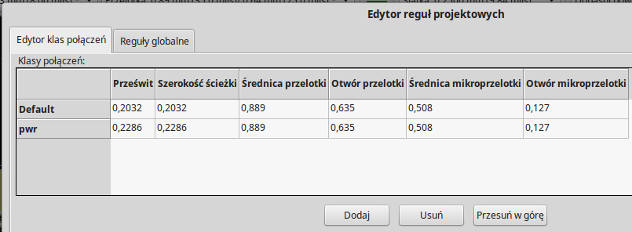 -
Kliknij na zakładkę Reguły globalne i ustaw Minimalna szerokość ścieżki na 0.25. Kliknij OK by zatwierdzić swoje zmiany i zamknij okno Edytor reguł projektowych.
-
Teraz zaimportujemy listę sieci. Kliknij w ikonę Wczytaj listę sieci
na górnym pasku
narzędzi. Kliknij na przycisk Przeglądaj pliki list sieci, wybierz
tutorial1.net w oknie dialogowym z wyborem pliku, i kliknij na Wczytaj
bieżącą listę sieci. Następnie kliknij przycisk Zamknij.
-
Wszystkie komponenty powinny być teraz widoczne w górnym, lewym rogu tuż ponad ramką z obrysem strony. Przesuń widok jeśli ich nie widzisz.
-
Wybierz wszystkie komponenty za pomocą myszy i przesuń je na środek płytki. Jeśli będzie to konieczne możesz powiększać lub pomniejszać widok podczas przesuwania komponentów.
-
Wszystkie komponenty są połączone za pomocą tak zwanych nitek pomocniczych (zwanych ratsnest). Upewnij się jednak czy przycisk Ukryj połączenia wspomagające
 jest wciśnięty. Tylko w ten sposób możesz zobaczyć nitki
pomocnicze łączące wszystkie komponenty.
Zapamiętaj
jest wciśnięty. Tylko w ten sposób możesz zobaczyć nitki
pomocnicze łączące wszystkie komponenty.
ZapamiętajPrzyciski te są odwrotnymi przełącznikami; wciskając ten przycisk wyświetlasz nitki pomocnicze. -
Możesz przesuwać każdy komponent najeżdżając na niego i wciskając klawisz g. Kliknij w miejscu gdzie chcesz go umieścić. Przesuwaj komponenty wokół do czasu, aż zminimalizujesz krzyżujące się połączenia.
ZapamiętajJeśli zamiast przeciągania komponentów (za pomocą klawisza g) przesuniesz je używając klawisza m zauważysz później, że utracisz połączenia ze ścieżkami (to samo występuje w edytorze schematów). 
-
Jeśli nitki znikną lub obraz zostanie zaśmiecony, kliknij prawym klawiszem i wybierz Odśwież widok. Zauważ, w jaki sposób jeden z pinów rezystora 100R jest połączony z pinem 6 układu PIC. Jest to rezultat użytej metody ze stosowaniem etykiet. Etykiety są często preferowaną metodą łączenia, ponieważ ich stosowanie powoduje lepszą czytelność schematu.
-
Teraz zdefiniujemy krawędź naszego PCB. Wybierz warstwę Edge.Cuts z rozwijanej listy na górnym pasku narzędzi. Kliknij w ikonę Dodaj linię lub wielokąt (grafika)
 na prawym pasku narzędzi. Narysuj prostokąt złożony z linii wokół
rozmieszczonych elementów, klikając po kolei w każdym z narożników,
pamiętając o zachowaniu małej przerwy pomiędzy zielonymi elementami na
rysunku a rysowanym właśnie obrysem PCB.
na prawym pasku narzędzi. Narysuj prostokąt złożony z linii wokół
rozmieszczonych elementów, klikając po kolei w każdym z narożników,
pamiętając o zachowaniu małej przerwy pomiędzy zielonymi elementami na
rysunku a rysowanym właśnie obrysem PCB.
-
Następnym krokiem jaki zrobimy będzie wytrasowanie wszystkich połączeń za wyjątkiem GND. W rzeczywistości, połączymy sieć GND używając do tego celu stref miedzi umieszczonego na dolnej warstwie miedzi (zwanej B.Cu) naszej płytki.
-
Teraz musimy wybrać na jakiej warstwie będziemy operować. Wybierz F.Cu (PgUp) z rozwijanej listy na górnym pasku narzędzi. Jest to górna warstwa miedzi płytki, tzn. ta na której normalnie są elementy.
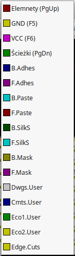 -
Jeśli zdecydujesz, na przykład, by pracować na 4 warstwach PCB, idź do Reguły projektowe → Opcje warstw i zmień Warstwy ścieżek na 4. W tabeli Warstwy możesz nazwać warstwy oraz zdecydować do czego będą one używane. Zwróć uwagę, że masz także dostęp do predefiniowanych konfiguracji warstw, wybieranych z menu Domyślne ustawienia warstw.
-
Kliknij na ikonę Dodaj ścieżki i przelotki
 na prawym pasku
narzędzi. Kliknij na pin 1 J1 i prowadź ścieżkę do padu R2. Kliknij
podwójnie w miejscu gdzie chcesz zakończyć ścieżkę. Szerokością domyślną
ścieżki będzie 0.250 mm. Możesz zmienić szerokość ścieżki z rozwijanej listy
na górnym pasku narzędzi. Pamiętaj jednak, że aktualnie masz tylko jedną
dostępną szerokość ścieżki:
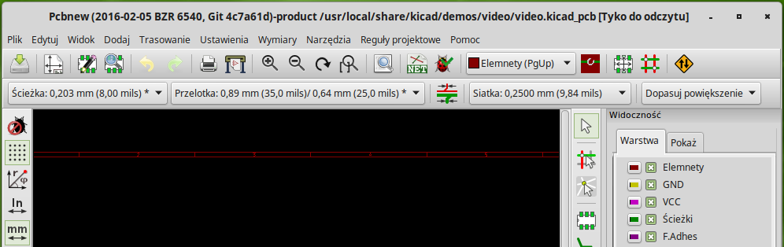
na prawym pasku
narzędzi. Kliknij na pin 1 J1 i prowadź ścieżkę do padu R2. Kliknij
podwójnie w miejscu gdzie chcesz zakończyć ścieżkę. Szerokością domyślną
ścieżki będzie 0.250 mm. Możesz zmienić szerokość ścieżki z rozwijanej listy
na górnym pasku narzędzi. Pamiętaj jednak, że aktualnie masz tylko jedną
dostępną szerokość ścieżki:
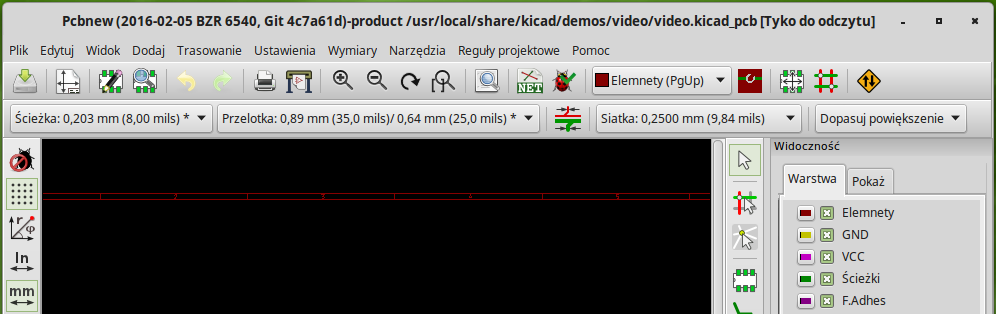 -
Jeśli chciałbyś dodać więcej dostępnych szerokości ścieżek, przejdź do zakładki: Reguły projektowe → Reguły projektowe → Reguły globalne i w dolnej, prawej części tego okna dodaj inne szerokości ścieżek jakie chciałbyś by były dostępne. Możesz potem wybrać te szerokości ścieżek z rozwijanej listy podczas trasowania ścieżek. Zobacz przykład umieszczony poniżej (jednostki w calach).
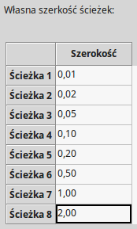 -
Alternatywnie, możesz dodać Klasę Połączeń, dla której definiujesz odrębny zestaw opcji. Idź do Reguły projektowe → Reguły projektowe → Edytor klas połączeń i dodaj nową klasę połączeń zwaną power. Zmień szerokość ścieżki z 8 milsów (zapisane jako 0.0080) na 24 milsy (zapisane jako 0.0240). Następnie, dodaj wszystkie sieci oprócz masy do klasy power (wybierz default na lewym panelu oraz power na prawym panelu i użyj strzałek).
-
Jeśli chcesz zmienić rozmiar siatki, Prawo-klik → Wybór siatki. Upewnij się, by wybrać odpowiedni rozmiar siatki przed trasowaniem ścieżek i łączeniem ich z ich pomocą.
-
Ponów operację dodawania ścieżek, aż wszystkie połączenia zostaną zrealizowane, oprócz pinu numer 3 elementu J1. Twoja płytka powinna wyglądać mniej więcej tak jak na poniższym przykładzie.
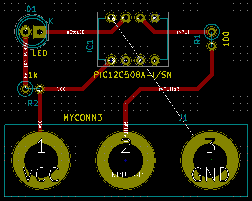 -
Poprowadźmy teraz ścieżkę na innej warstwie miedzi. Wybierz B.Cu na rozwijanej liście na górnym pasku narzędzi. Kliknij w ikonę Dodaj ścieżki i przelotki
. Narysuj
ścieżkę pomiędzy pinem numer 3 J1 a pinem 8 U1. Nie jest ona w sumie
konieczna, ponieważ połączenie to wykonamy za pomocą pola miedzi, ale
zrobimy ją dla przykładu. Zauważ jak zmienił się kolor ścieżki.
-
Trasowanie połączeń pomiędzy pinami A i B ze zmianą warstwy. Podczas trasowania ścieżki można zmienić warstwę wstawiając przelotkę. W czasie gdy prowadzisz ścieżkę na górnej warstwie miedzi, kliknij prawym klawiszem i wybierz Dodaj przelotkę lub po prostu naciśnij klawisz v. To spowoduje przeniesienie dalszych segmentów na warstwę dolną gdzie ścieżka zostanie dokończona.
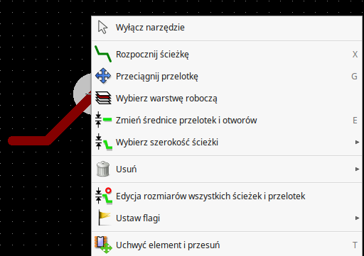 -
Jeśli chciałbyś sprawdzić jak przebiega wybrane połączenie możesz kliknąć w ikonę Podświetl sieć
 na prawym panelu narzędzi. Kliknij na pin 3 elementu J1. Sama
ścieżka jak i wszystkie pola lutownicze do niej podłączone powinny zostać
podświetlone.
na prawym panelu narzędzi. Kliknij na pin 3 elementu J1. Sama
ścieżka jak i wszystkie pola lutownicze do niej podłączone powinny zostać
podświetlone.
-
Teraz stworzymy pole masy, które połączymy ze wszystkimi pinami GND. Kliknij w ikonę Dodaj strefy
 na prawym pasku narzędzi. Będziemy trasować prostokąt wokół płytki, więc
kliknij tam, gdzie chcesz umieścić jeden z narożników. W oknie dialogowym
jakie się pojawi, ustaw Sposób łączenia padów na Połączenie termiczne i
Opcje wypełniania na Tylko poziomo, pionowo i 45 stopni, i kliknij OK.
na prawym pasku narzędzi. Będziemy trasować prostokąt wokół płytki, więc
kliknij tam, gdzie chcesz umieścić jeden z narożników. W oknie dialogowym
jakie się pojawi, ustaw Sposób łączenia padów na Połączenie termiczne i
Opcje wypełniania na Tylko poziomo, pionowo i 45 stopni, i kliknij OK.
-
Narysuj obrys strefy klikając w każdym z miejsc gdzie ma znaleźć się kolejny narożnik. Kliknij podwójnie by zakończyć rysunek. Kliknij prawym klawiszem wewnątrz obszaru jaki właśnie narysowałeś. Kliknij w Wypełnij lub ponownie wypełnij wszystkie sterfy. Płytka powinna zostać wypełniona zielonym polem i powinna wyglądać mniej więcej tak:

-
Uruchom narzędzie do sprawdzania reguł projektowych klikając w ikonę Kontrola reguł projektowych PCB
na
górnym pasku narzędzi. Kliknij na Uruchom DRC. Nie powinno być żadnych
błędów. Kliknij na Lista niepołączonych. Nie powinno być żadnych
niepołączonych ścieżek. Kliknij OK by zamknąć okno dialogowe DRC.
-
Zapisz swój plik PCB klikając na Plik → Zapisz. By zobaczyć swoją płytkę w 3D, kliknij na Widok → Widok 3D.

-
Możesz przeciągnąć myszą wokół by obracać płytką.
-
Twoja płytka jest już kompletna. By wysłać ją do producenta będziesz musiał wygenerować pliki Gerber.
4.2. Generowanie plików Gerber
Jeśli twoje PCB jest kompletne, możesz wygenerować pliki Gerber dla każdej z warstw płytki i wysłać je do wybranego producenta PCB, który na ich podstawie stworzy dla ciebie fizyczną płytkę drukowaną.
-
Za pomocą menedżera, otwórz program Pcbnew i załaduj swoją płytkę klikając w ikonę
 .
.
-
Kliknij na Plik → Rysuj. Wybierz Gerber jako Format wyjściowy oraz wybierz folder, do którego trafią wszystkie pliki Gerber. Następnie klilnij przycisk Rysuj.
-
To są warstwy jakie potrzebujesz do wykonania typowej płytki dwustronnej:
| Warstwa | Nazwa warstwy w programie KiCad | Stara nazwa | Domyślne rozszrzenie pliku Gerber gdy opcja | "Użyj rozszerzeń plików zaproponowanych przez Protel" jest włączona |
|---|---|---|---|---|
Bottom Layer |
B.Cu |
Copper |
.GBR |
.GBL |
Top Layer |
F.Cu |
Component |
.GBR |
.GTL |
Top Overlay |
F.SilkS |
SilkS_Cmp |
.GBR |
.GTO |
Bottom Solder Resist |
B.Mask |
Mask_Cop |
.GBR |
.GBS |
Top Solder Resist |
F.Mask |
Mask_Cmp |
.GBR |
.GTS |
Edges |
Edge.Cuts |
Edges_Pcb |
.GBR |
.GM1 |
4.3. Używanie programu GerbView
-
By przejrzeć wszystkie pliki Gerber wróć do menedżera i kliknij w ikonę GerbView. Z listy rozwijanej wybierz Warstwa 1. Kliknij na Plik → Wczytaj plik Gerber lub kliknij w ikonę
 . Załaduj po
kolei wszystkie pliki Gerber. Zwróć uwagę w jaki sposób są one wyświetlane
jedna na drugiej.
. Załaduj po
kolei wszystkie pliki Gerber. Zwróć uwagę w jaki sposób są one wyświetlane
jedna na drugiej.
-
Użyj poleceń z menu lub prawego panelu warstw by zaznaczyć/odznaczyć wyświetlanie kolejnych warstw. Dokładnie sprawdź każdą z warstw przed wysłaniem plików do produkcji.
-
By wygenerować plik wierceń, z Pcbnew wybierz ponownie opcję Plik → Rysuj. Domyślne ustawienia powinny być dobre.
4.4. Automatyczne prowadzenie ścieżek z wykorzystaniem FreeRouter-a
Trasowanie płytek ręcznie jest szybkie i dostarcza wiele radości, jednak w przypadku płytek zawierających sporo elementów, możesz zechcieć użyć autoroutera. Pamiętaj jednak, że przedtem powinieneś wytrasować krytyczne ścieżki ręcznie, a potem ustawić autorouter tak, by zajął się tymi trudniejszymi. Jego praca powinna być ograniczona tylko do niezrealizowanych ścieżek. Autorouter jaki tu użyjemy to FreeRouter ze strony freerouting.net.
|
Zapamiętaj
|
Freerouter to otwartoźródłowa aplikacja w języku Java, i wymagane jest jej samodzielne zbudowanie by móc użyć jej w programie KiCad. Kod źródłowy aplikacji Freerouter można znaleźć pod adresem: https://github.com/nikropht/FreeRouting |
-
Z Pcbnew kliknij w Plik → Eksportuj → Specctra DNS lub Narzędzia → Freeroute → Eksportuj plik Specctra Design (*.dsn) oraz zapisz lokalnie plik .dsn`. Uruchom FreeRouter oraz kliknij w Open Your Own Design, wybierz plik .dsn oraz załaduj go.
ZapamiętajOkno dialogowe wywoływane przez Narzędzia → FreeRoute posiada fajny przycisk z pomocą, która otwiera małe okno podglądu, gdzie można przeczytać dokument Freerouter Guidelines. Proszę skorzystać z wskazówek by móc użyć narzędzia FreeRoute w sposób efektywny. -
FreeRouter posiada pewne cechy których KiCad w tej chwili nie posiada, oba przy manualnym i automatycznym trasowaniu ścieżek. FreeRouter działa za pomocą dwóch głównych kroków: pierwszy, trasuje on ścieżki na płytce first, a następnie je optymalizuje. Pełna optymalizacja może zabrać sporo czasu, jednak możesz ją zatrzymać w każdej chwili.
-
Możesz rozpocząć automatyczne trasowanie ścieżek klikając na przycisk Autorouter na górnym pasku. Dolny pasek przedstawia informacje o przebiegu trasowania. Jeśli licznik Pass zbliży się do wartości 30, twoja płytka prawdopodobnie nie może zostać wytrasowana z pomocą tego routera. Rozszerz nieco przestrzeń pomiędzy komponentami lub obróć niektóre z nich i spróbuj ponownie. Celem rotacji i zmiany pozycji elementów jest zmniejszenie ilości krzyżujących się połączeń.
-
Kliknięcie lewym klawiszem myszy zatrzymuje proces automatycznego trasowania i automatycznie rozpoczyna proces optymalizacji połączeń. Ponowne kliknięcie zatrzyma proces optymalizacji. Jeśli naprawdę nie masz zamiaru przerwać jednego z tych dwóch procesów, lepiej zaczekaj aby FreeRouter zakończył swoją pracę.
-
Kliknij na File → Export Specctra Session File oraz zapisz plik płytki z rozszerzeniem .ses. Nie będzie trzeba zapisywać pliku reguł FreeRouter.
-
Wróć do Pcbnew. Możesz zaimportować świeżo wytrasowaną płytkę klikając w link Narzędzia → FreeRoute a następnie w ikonę Importuj plik Spectra Session (*.ses) by wybrać twój plik .ses.
Jeśli istnieją ścieżki, których prowadzenie ci się nie podoba, możesz je
skasować i wytrasować ponownie, używając klawisza Delete i narzędzia do
trasowania ścieżek, które jest dostępne przez ikonę Dodaj ścieżki i
przelotki
 na prawym
pasku narzędzi.
na prawym
pasku narzędzi.
5. Renumeracja elementów w programie KiCad
Po skompletowaniu już schematu elektronicznego, przypisaniu footprintów, wytrasowaniu ścieżek i wygenerowaniu plików Gerber, jesteś gotów, by wysłać wszystko do producenta PCB tak, aby płytka mogła stać się rzeczywistością.
Często ta liniowość procesu pracy nad płytką okazuje się nie być taka jednokierunkowa. Na przykład, gdy musisz zmodyfikować/rozszerzyć płytkę, dla której ty lub inne osoby już wykonały cały proces projektowy, może zajść potrzeba przeniesienia niektórych elementów, zastąpić je innymi, dokonać zmiany footprintów lub jeszcze innych poprawek. Podczas procesu modyfikacji z pewnością nie chciałbyś ponownie trasować całej płytki od początku. Zamiast tego, powinieneś zrobić to w ten sposób:
-
Przypuśćmy, że hipotetycznie chcesz zamienić złącze CON1 przez CON2.
-
Masz już w pełni stworzony schemat jak i płytkę.
-
Z menedżera projektu KiCad, uruchom Eeschema, dokonaj swoich modyfikacji usuwając złącze CON1 i dodając CON2. Zapisz swój projekt schematu z pomocą ikony
i kliknij w ikonę Utwórz
listę sieci
na górnym
pasku narzędzi.
-
Kliknij na Lista sieci następnie na Zapisz. Zapisz pod domyślną nazwą, nadpisując starą listę sieci.
-
Teraz przypiszemy footprint dla CON2. Kliknij w Uruchom CvPcb
na górnym pasku narzędzi. Przypisz
footprint do nowego elementu CON2. Reszta komponentów nadal posiada
poprzednio im przypisane footprinty. Zamknij CvPcb.
-
Wróć do edytora schematów, zapisz projekt klikając na Plik → Zapisz cały projekt schematu. Zamknij edytor schematów.
-
Z menedżera projektu, kliknij w ikonę Pcbnew. Otworzy się okno Pcbnew.
-
Stara, już wytrasowana płytka powinna się otworzyć automatycznie. Zaimportujmy nową listę sieci. Kliknij na Wczytaj listę sieci
na górnym pasku
narzędzi.
-
Kliknij na klawisz Przeglądaj listy sieci, wybierz plik z listą sieci w oknie dialogowym wyboru pliku oraz kliknij na Wczytaj bieżącą listę sieci. Następnie kliknij klawisz Zamknij.
-
W tym punkcie powinieneś już zobaczyć obwód drukowany z poprzednio wytyczonymi ścieżkami. W lewym górnym rogu powinieneś zobaczyć wszystkie komponenty jakie nie zostały jak dotąd w pełni umieszczone na płytce, w twoim przypadku CON2. Wybierz CON2 za pomocą myszy. Przesuń komponent na środek płytki.
-
Umieść CON2 we właściwym miejscu i pociągnij ścieżki. Po tych operacjach, zapisz projekt i wygeneruj pliki Gerber tak jak zwykle.
Proces opisany tutaj może być łatwo powtórzony tyle razy, ile trzeba. Oprócz metody opisanej powyżej, jest również inna metoda znana jako numeracja wsteczna. Metoda ta pozwala na dokonywanie zmian w wytrasowanym już PCB w Pcbnew i przeniesienia tych zmian do schematu i plików z listą sieci. Metoda numeracji wstecznej, jednak nie jest tak użyteczna i dlatego nie jest tutaj opisana.
6. Tworzenie symboli w programie KiCad
Czasem komponent jaki chciałbyś wstawić do schematu nie znajduje się w standardowych bibliotekach programu KiCad. Jest to normalne i nie powinno to być powodem zmartwień. W tej sekcji zobaczysz w jaki sposób można szybko taki komponent stworzyć korzystając z narzędzi programu KiCad. Pamiętaj też, że możesz zawsze znaleźć komponenty przeznaczone dla programu KiCad w sieci Intenet. Na przykład korzystając z tej witryny:
W programie KiCad, komponent to fragment tekstu zawarty pomiędzy znacznikami DEF i ENDDEF. Pojedyncze komponenty lub ich większa ilość normalnie są umieszczane w bibliotekach, które są plikami z rozszerzeniem .lib. Jeśli chcesz dodać komponenty do pliku biblioteki, możesz też użyć metody kopiuj-wklej.
6.1. Używanie Edytora bibliotek
-
Możemy użyć Edytora bibliotek (cześć programu Eeschema) do tworzenia nowych komponentów. W naszym folderze projektu tutorial1 stwórzmy folder nazwany library. Wewnątrz niego umieścimy nasz nowy plik biblioteki myLib.lib jak stworzymy nasz nowy komponent.
-
Teraz możemy rozpocząć proces tworzenia naszego nowego komponentu. Z menedżera projektu uruchom program Eeschema, kliknij w ikonę Edytor bibliotek
 a następnie kliknij
w ikonę Utwórz nowy symbol
a następnie kliknij
w ikonę Utwórz nowy symbol
 w otwartym oknie. Pojawi się okno Właściwości symbolu. Nazwij nowy
komponent jako MYCONN3, ustaw Domyślne oznaczenie na J, oraz Liczba
części w paczce na 1. Kliknij OK. Jeśli pojawi się okno ostrzeżenia
kliknij na Tak. W tym miejscu komponent zawiera tylko podstawowy zestaw
pól. Dodajmy parę pinów. Kliknij na ikonę Dodaj piny
w otwartym oknie. Pojawi się okno Właściwości symbolu. Nazwij nowy
komponent jako MYCONN3, ustaw Domyślne oznaczenie na J, oraz Liczba
części w paczce na 1. Kliknij OK. Jeśli pojawi się okno ostrzeżenia
kliknij na Tak. W tym miejscu komponent zawiera tylko podstawowy zestaw
pól. Dodajmy parę pinów. Kliknij na ikonę Dodaj piny
 na prawym pasku narzędzi. By
umieścić pin, kliknij lewym klawiszem w centrum edytora mniej więcej poniżej
etykiety MYCONN3.
na prawym pasku narzędzi. By
umieścić pin, kliknij lewym klawiszem w centrum edytora mniej więcej poniżej
etykiety MYCONN3.
-
W oknie Właściwości pinu jakie się pojawi, ustaw nazwę pinu jako VCC, ustaw numer pinu na 1, oraz Typ elektryczny na Pasywny, następnie kliknij OK.
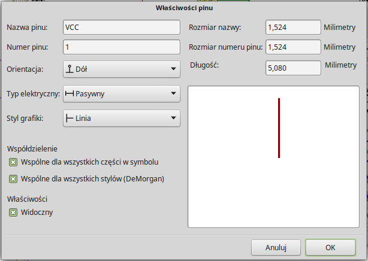 -
Umieść pin klikając w miejscu gdzie chciałbyś aby się pojawił, mniej więcej na prawo pod etykietą MYCONN3.
-
Powtórz kroki z tworzeniem pinu ponownie, tym razem wpisując w pole Nazwa pinu nazwę INPUT, Numer pinu na 2, a Typ elektryczny na Pasywny.
-
Powtórz ostatni raz kroki z tworzeniem pinu, tym razem wypełniając pola Nazwa pinu jako GND, Numer pinu na 3, a Typ elektryczny jako Pasywny. Ustaw piny tak by były jeden nad drugim. Etykieta MYCONN3 powinna znaleźć się w centrum (gdzie krzyżują się dwie niebieskie linie).
-
Następnie, narysuj kontur symbolu. Kliknij w ikonę Dodaj prostokąt (grafika)
 . Chcielibyśmy by został narysowany kwadrat obok pinów, tak jak
pokazuje to rysunek. By to zrobić, kliknij w miejscu gdzie chciałbyś
umieścić lewy, górny narożnik. Kliknij ponownie w miejscu gdzie chciałbyś
umieścić prawy dolny narożnik.
. Chcielibyśmy by został narysowany kwadrat obok pinów, tak jak
pokazuje to rysunek. By to zrobić, kliknij w miejscu gdzie chciałbyś
umieścić lewy, górny narożnik. Kliknij ponownie w miejscu gdzie chciałbyś
umieścić prawy dolny narożnik.

-
Jeśli prostokąt miałby być wypełniony na żółto, należy ustawić kolor Żółty 4 w Ustawienia → Kolory, następnie umieszczając kursor nad prostokątem wcisnąć e i w oknie dialogowym zaznaczyć Wypełnienie drugoplanowe.
-
Zapiszmy komponent w naszej bibliotece myLib.lib. Kliknij w ikonę Zapisz bieżący symbol w nowej bibliotece
 , przejdź do
folderu tutorial1/library/ i zapisz nowy plik biblioteki pod nazwą
myLib.lib.
, przejdź do
folderu tutorial1/library/ i zapisz nowy plik biblioteki pod nazwą
myLib.lib.
-
Idź do Ustawienia → Biblioteka i dodaj zarówno tutorial1/library/ w Bieżąca lista przeglądanych ścieżek jak i myLib.lib w Pliki bibliotek symboli.
-
Kliknij w ikonę 'Wybierz bibliotekę roboczą'
 . W oknie
Wybór biblioteki kliknij na myLib i kliknij OK. Zauważ, że nagłówek okna
wskazuje jaka biblioteka jest aktualnie w użyciu, powinien on teraz zawierać
myLib.
. W oknie
Wybór biblioteki kliknij na myLib i kliknij OK. Zauważ, że nagłówek okna
wskazuje jaka biblioteka jest aktualnie w użyciu, powinien on teraz zawierać
myLib.
-
Kliknij w ikonę Zaktualizuj symbol w bieżącej bibliotece
 na górnym
pasku narzędzi. Zapisz wszystkie zmiany klikając w ikonę Zapisz bieżącą
bibliotekę na dysk
na górnym
pasku narzędzi. Zapisz wszystkie zmiany klikając w ikonę Zapisz bieżącą
bibliotekę na dysk
 na górnym pasku narzędzi. Kliknij na Tak w oknie z komunikatem
potwierdzenia jakie się pojawi. Nowy symbol jest zrobiony i dostępny w
bibliotece, której nazwę wskazuje pasek tytułowy.
na górnym pasku narzędzi. Kliknij na Tak w oknie z komunikatem
potwierdzenia jakie się pojawi. Nowy symbol jest zrobiony i dostępny w
bibliotece, której nazwę wskazuje pasek tytułowy.
-
Możesz teraz zamknąć okno Edytora bibliotek. Tym samym wrócisz do okna edytora schematu. Nowy komponent będzie dostępny dla ciebie w bibliotece myLib.
-
Możesz udostępnić dla danego projektu każdy plik biblioteki, np. file.lib dodając go do przeglądanych ścieżek. Z poziomu Eeschema, idź do Ustawienia → Biblioteka i dodaj zarówno ścieżkę do niego w Bieżąca lista przeglądanych ścieżek, jak i sam plik file.lib w Plik bibliotek symboli.
6.2. Eksportowanie, importowanie oraz modyfikacje składników bibliotek
Zamiast tworzyć symbol w bibliotece od zera, czasem łatwiej jest zacząć od istniejącego symbolu, modyfikując go. W tej sekcji zobaczymy jak wyeksportować komponent z standardowej biblioteki device do naszej własnej biblioteki myOwnLib.lib a następnie go zmodyfikujemy.
-
Z menedżera uruchom Eeschema, kliknij w ikonę Edytor bibliotek
, kliknij w ikonę Wybierz
bibliotekę roboczą'
oraz wybierz bibliotekę 'device. Kliknij w ikonę Wczytaj symbol z
bieżącej biblioteki w celu edycji
 i
zaimportuj symbol RELAY_2RT.
i
zaimportuj symbol RELAY_2RT.
-
Kliknij w ikonę Eksportuj symbol
 , przejdź do folderu library/ oraz zapisz nową bibliotekę pod
nazwą myOwnLib.lib.
, przejdź do folderu library/ oraz zapisz nową bibliotekę pod
nazwą myOwnLib.lib.
-
Możesz stworzyć ten komponent i dołączyć całą bibliotekę myOwnLib.lib do dostępnych bibliotek poprzez dodanie jej do ścieżek przeszukiwań bibliotek. Z poziomu Eeschema, idź do Ustawienia → Biblioteka i dodaj zarówno ścieżkę do library/ w Bieżąca lista przeglądanych ścieżek oraz myOwnLib.lib w Plik bibliotek symboli. Po czym zamknij okno.
-
Kliknij w ikonę 'Wybierz bibliotekę roboczą'
. W oknie
Wybór biblioteki kliknij na myOwnLib oraz na OK. Zauważ, że pasek
tytułowy okna zmienił się i wskazuje na aktywną bibliotekę myOwnLib.
-
Kliknij w ikonę Wczytaj symbol z bieżącej biblioteki w celu edycji
i
zaimportuj RELAY_2RT.
-
Możesz teraz zmodyfikować ten symbol jak chcesz. Najedź na etykietę RELAY_2RT, wciśnij klawisz e i zmień nazwę na MY_RELAY_2RT.
-
Kliknij w ikonę Zaktualizuj symbol w bieżącej bibliotece
na górnym
pasku narzędzi. Zapisz wszystkie zmiany klikając w ikonę Zapisz bieżącą
bibliotekę na dysk
na górnym pasku narzędzi.
6.3. Tworzenie symboli za pomocą Quicklib
Ten rozdział prezentuje alternatywny sposób tworzenia komponentu MYCONN3 (zobacz MYCONN3 powyżej) używając do tego celu narzędzia on-line quicklib.
-
Przejdź na stronę quicklib: http://kicad.rohrbacher.net/quicklib.php
-
Wypełnij formularz zgodnie z następującymi informacjami: Component name: MYCONN3 Reference Prefix: J Pin Layout Style: SIL Pin Count, N: 3
-
Kliknij w ikonę Assign Pins. Wypełnij pola następującymi informacjami: Pin 1: VCC Pin 2: input Pin 3: GND. Type: Passive dla wszystkich trzech pinów.
-
Kliknij w ikonę Preview it i, jeśli jesteś usatysfakcjonowany, kliknij na Build Library Component. Pobierz plik i zmień jego nazwę na tutorial1/library/myQuickLib.lib. To wszystko!
-
Zobacz jak wygląda symbol w programie KiCad. Z menedżera projektu uruchom Eeschema, kliknij w ikonę Edytor bibliotek
, kliknij w ikonę Importuj
symbol, przejdź do tutorial1/library/ i wybierz
 myQuickLib.lib.
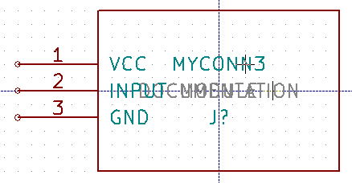
myQuickLib.lib.
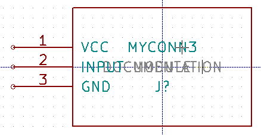 -
Możesz dodać ten komponent jak i bibliotekę do dostępnych bibliotek. Z poziomu Eeschema, idź do Ustawienia → Biblioteka i dodaj zarówno ścieżkę do library/ w Bieżąca lista przeglądanych ścieżek oraz myQuickLib.lib w Plik bibliotek symboli.
Jak pewnie zgadłeś, ta metoda tworzenia symboli bibliotecznych może być bardzo efektywna, przy tworzeniu symboli, które zawierają w sobie dużą ilość wyprowadzeń. Ale jest też inny sposób.
6.4. Tworzenie symboli z dużą ilością wyprowadzeń
W sekcji zwanej Tworzenie symboli za pomocą quicklib poznaliśmy jak tworzyć symbole używając do tego celu narzędzia quicklib opartego o stronę Web. Jednak, czasami możesz doświadczyć sytuacji, że będziesz potrzebował symbolu, który zawierał będzie dużą ilość wyprowadzeń (np. paręset wyprowadzeń). W programie KiCad nie jest to aż tak skomplikowane zadanie.
-
Przypuśćmy, że chciałbyś utworzyć symbol, który posiadał będzie 50 wyprowadzeń. Praktycznie stosowaną metodą jest podzielenie takiego elementu na mniejsze części, dla przykładu na dwie zawierające po 25 wyprowadzeń. Taka reprezentacja symbolu pozwala na łatwiejsze łączenie wyprowadzeń.
-
Najlepszym sposobem jest użycie quicklib gdzie wygenerujemy dwa symbole po 25 pinów w każdym, i zmienimy numerację pinów za pomocą skryptu języka Python i na koniec połączymy te dwa symbole w jeden korzystając z metody kopiuj-wklej w jeden komponent zawarty pomiędzy DEF a ENDDEF.
-
Przykład takiego prostego skryptu języka Python znajdziesz poniżej. Może on być użyty w połączeniu z plikami in.txt oraz out.txt gdzie zamienimy linie zawierające: X PIN1 1 -750 600 300 R 50 50 1 1 I na X PIN26 26 -750 600 300 R 50 50 1 1 I, dla wszystkich linii w pliku in.txt.
#!/usr/bin/env python ''' simple script to manipulate KiCad component pins numbering''' import sys, re try: fin=open(sys.argv[1],'r') fout=open(sys.argv[2],'w') except: print "oh, wrong use of this app, try:", sys.argv[0], "in.txt out.txt" sys.exit() for ln in fin.readlines(): obj=re.search("(X PIN)(\d*)(\s)(\d*)(\s.*)",ln) if obj: num = int(obj.group(2))+25 ln=obj.group(1) + str(num) + obj.group(3) + str(num) + obj.group(5) +'\n' fout.write(ln) fin.close(); fout.close() # # for more info about regular expression syntax and KiCad component generation: # http://gskinner.com/RegExr/ # http://kicad.rohrbacher.net/quicklib.php
-
Podczas łączenia dwóch symboli w jeden, będzie konieczne użycie Edytora Bibliotek programu Eeschema by przenieść pierwszy symbol, tak aby drugi z symboli go nie przykrył. Poniżej możesz zobaczyć finalny plik .lib i jego reprezentację w Eeschema.
EESchema-LIBRARY Version 2.3 #encoding utf-8 # COMP DEF COMP U 0 40 Y Y 1 F N F0 "U" -1800 -100 50 H V C CNN F1 "COMP" -1800 100 50 H V C CNN DRAW S -2250 -800 -1350 800 0 0 0 N S -450 -800 450 800 0 0 0 N X PIN1 1 -2550 600 300 R 50 50 1 1 I ... X PIN49 49 750 -500 300 L 50 50 1 1 I ENDDRAW ENDDEF #End Library

-
Skrypt języka Python zaprezentowany tutaj jest bardzo potężnym narzędziem przy manipulacji numeracją wyprowadzeń i ich opisów. Pamiętaj jednak, że cała moc tego skryptu tkwi tylko w części operującej na Wyrażeniach Regularnych: http://gskinner.com/RegExr/
7. Tworzenie footprint-ów
W przeciwieństwie do innych narzędzi EDA, które posiadają jeden rodzaj bibliotek zawierający zarówno symbole jak i wiele przypisanych do nich footprintów; pliki .lib programu KiCad zawierają tylko symbole, a pliki .kicad_mod zawierają tylko footprinty. W celu powiązania symboli i modułów z powodzeniem stosowany jest program CvPcb.
Zarówno pliki .lib, jak i pliki .kicad_mod to pliki tekstowe, zawierające wszystkie od jednej do kilku części.
Istnieje obszerna biblioteka modułów programu KiCad, jednak od czasu do czasu może się okazać, że moduł jaki potrzebujesz nie znajduje się w bibliotekach KiCad-a. Oto krótki przewodnik procesu tworzenia nowego modułu w programie KiCad:
7.1. Używanie Edytora footprintów
-
Z menedżera projektu KiCad uruchom Pcbnew. Kliknij w ikonę Otwórz edytor modułów
 na
górnym pasku narzędzi. Spowoduje to otwarcie Edytora Footprintów.
na
górnym pasku narzędzi. Spowoduje to otwarcie Edytora Footprintów.
-
Zapiszemy teraz nowy footprint MYCONN3 w nowej bibliotece footprintów myfootprint. Utwórz nowy folder myfootprint.pretty w folderze projektu_tutorial1/_. Kliknij na Ustawienia → Zarządzanie bibliotekami footprintów i naciśnij przycisk Dołącz bibliotekę. W tabeli, wpisz "myfootprint" w polu Nazwa skrótowa, wpisz "${KIPRJMOD}/myfootprint.pretty" w polu Ścieżka oraz wybierz "KiCad" w polu Typ wtyczki. Naciśnij OK by zamknąć okno Tabele bibliotek PCB. Kliknij w ikonę Wybierz aktywną bibliotekę
na górnym
pasku narzędzi. Wybierz bibliotekę myfootprint.
-
Kliknij w ikonę Nowy footprint
 na górnym pasku narzędzi. Wpisz MYCONN3 jako Nazwa
footprintu. W środku pola roboczego pojawi się etykieta MYCONN3. Pod nią
możesz zobaczyć drugą etykietę REF*. Kliknij prawym klawiszem myszy na
MYCONN3 i przesuń etykietę powyżej REF*. Kliknij prawym klawiszem na
REF*_, wybierz Edytuj tekst modułu i zmień go na SMD. Ustaw wartość
_Pokazuj na Niewidoczny.
na górnym pasku narzędzi. Wpisz MYCONN3 jako Nazwa
footprintu. W środku pola roboczego pojawi się etykieta MYCONN3. Pod nią
możesz zobaczyć drugą etykietę REF*. Kliknij prawym klawiszem myszy na
MYCONN3 i przesuń etykietę powyżej REF*. Kliknij prawym klawiszem na
REF*_, wybierz Edytuj tekst modułu i zmień go na SMD. Ustaw wartość
_Pokazuj na Niewidoczny.
-
Wybierz ikonę Dodaj pola lutownicze
 na prawym pasku narzędzi. Kliknij w obszarze roboczym by umieścić tam
pole lutownicze. Kliknij prawym klawiszem na nowym polu i kliknij Edytuj
pole. Możesz też użyć klawisza e.
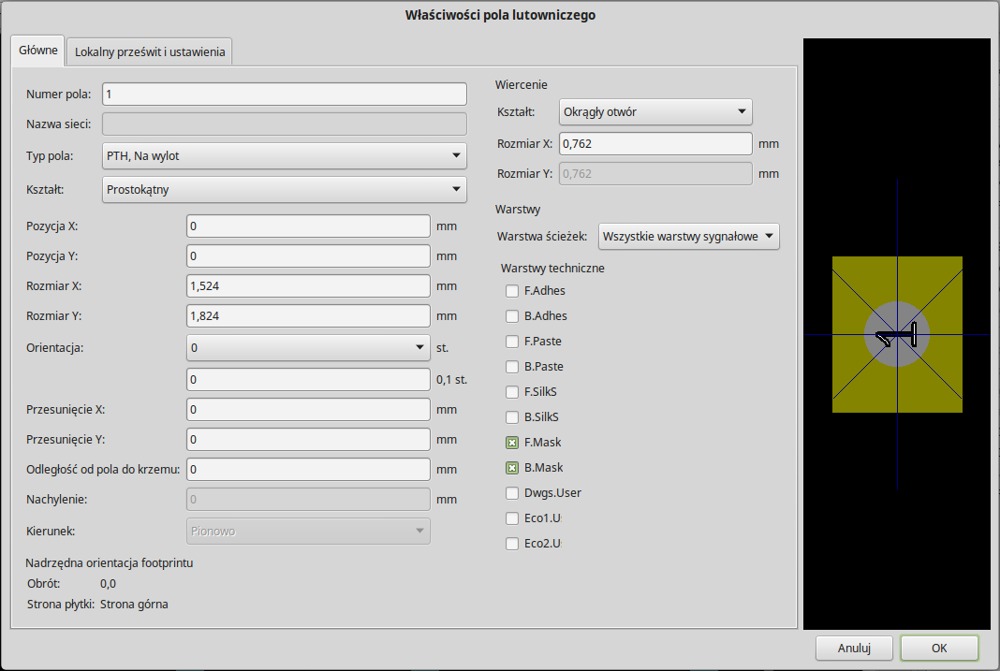
na prawym pasku narzędzi. Kliknij w obszarze roboczym by umieścić tam
pole lutownicze. Kliknij prawym klawiszem na nowym polu i kliknij Edytuj
pole. Możesz też użyć klawisza e.
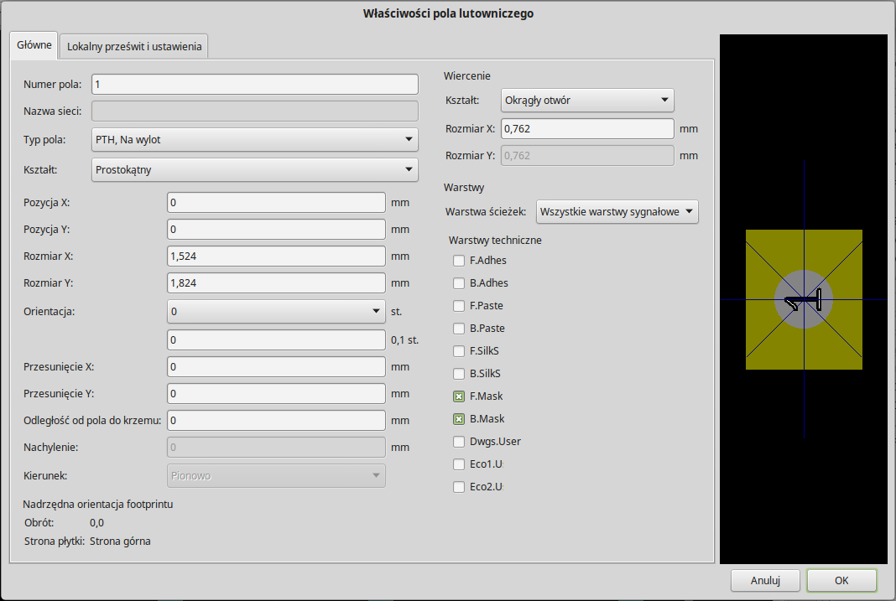 -
Ustaw Numer pola na 1, Kształt pola na Prostokąt, Typ pola na SMD, Rozmiar X na 0.4, oraz Rozmiar Y na 0.8. Kliknij OK. Kliknij na Dodaj pola lutownicze ponownie i wstaw jeszcze dwa pola lutownicze.
-
Jeśli chcesz zmienić gęstość siatki, Prawo-klik → Wybór siatki. Upewnij się, że wybrałeś odpowiednią gęstość siatki przed tworzeniem dalszych elementów modułu.
-
Przesuń etykietę MYCONN3 oraz SMD poza pola lutownicze, tak aby znalazły mniej więcej w miejscach pokazanych na następnym obrazku.
-
Gdy wstawiamy pola lutownicze często jest konieczne korzystanie z pomiaru odległości względnej. Umieść kursor gdzie chciałbyś umieścić punkt początkowy (0, 0) względnego układu współrzędnych i naciśnij klawisz Spacja. Jeśli poruszasz myszą, zauważysz, że współrzędne relatywne pokazywane na pasku statusu będą odnosić się do ustalonego teraz punktu zerowego. Możesz przenosić ten punkt zerowy za każdym razem jak będziesz potrzebował określić dystans od jakiegoś wybranego punktu.
-
Teraz dodamy obrys modułu. Kliknij w ikonę Dodaj linię lub wielokąt (grafika)
 ] na
prawym pasku narzędzi. Narysuj obrys wokół pól lutowniczych.
] na
prawym pasku narzędzi. Narysuj obrys wokół pól lutowniczych.
-
Kliknij w ikonę Zapisz moduł w aktywnej bibliotece
na górnym pasku
narzędzi i użyj domyślnej nazwy MYCONN3.
8. Uwagi na temat przenoszenia plików projektów wykonanych w programie KiCad
Jakie pliki musisz wysłać do kogoś, by mógł on w pełni załadować i użyć twojego projektu?
Jeśli będziesz musiał się z kimś podzielić swoim projektem, ważne jest by plik ze schematem .sch, plik z płytką .kicad_pcb, plik projektu .pro oraz plik z listą sieci .net, wysłać razem z bibliotekami symboli .lib oraz bibliotekami footprintów .kicad_mod. Tylko w ten sposób inne osoby będą miały wolną rękę w modyfikacji schematu lub obwodu drukowanego.
Dla schematu, będą potrzebne pliki bibliotek .lib które zawierają w sobie definicje symboli. Te biblioteki muszą zostać załadowane poprzez odpowiednie ustawienia w programie Eeschema. Z drugiej strony, footpriny mogą być zapisane w plikach PCB (pliki .kicad_pcb). Możesz wysłać komuś plik .kicad_pcb i nic poza tym, a on dalej będzie miał możliwość oglądania lub edycji płytki. Jednak, jeśli chciałby on załadować moduły z listy sieci, biblioteki footprintów (pliki .kicad_mod) muszą być obecne i poprawnie załadowane przez ustawienia programu Pcbnew, tak jak w przypadku schematu. Niezbędne są one także przy przypisywaniu symbolom footprintów za pomocą programu CvPcb.
Jeśli ktoś prześle ci plik .kicad_pcb z modułami które chciałbyś użyć na innej płytce, możesz otworzyć edytor footprintów, załadować footprint z bieżącej płytki, oraz zapisać lub wyeksportować go do innej biblioteki. Możesz także wyeksportować wszystkie footprinty z pliku .kicad_pcb za jednym razem, stosując polecenie Pcbnew Plik → Archiwizuj obudowy → Utwórz archiwum obudów, które tworzy nowy plik biblioteki .kicad_mod z wszystkimi modułami jakie znajdują się na płytce.
Na koniec, jeśli PCB jest tylko jedną rzeczą jaką chcesz przekazać, to sam plik .kicad_pcb jest wystarczający. Jednak, jeśli chcesz dać komuś możliwość używania i modyfikowania twojego schematu, jego komponentów i PCB, jest wysoce zalecane by zarchiwizować i wysłać następujące pliki (przykładowo) razem ze strukturą katalogów:
tutorial1/
|-- tutorial1.pro
|-- tutorial1.sch
|-- tutorial1.kicad_pcb
|-- tutorial1.net
|-- library/
| |-- myLib.lib
| |-- myOwnLib.lib
| \-- myQuickLib.lib
|
|-- myfootprint.pretty/
| \-- MYCONN3.kicad_mod
|
\-- gerber/
|-- ...
\-- ...
9. Więcej na temat dokumentacji do programu KiCad
Dokument ten, to szybki przegląd funkcji dostępnych w programie KiCad. W celu uzyskania szczegółowych instrukcji należy zapoznać się z plikami pomocy, do których dostęp można uzyskać z każdego modułu KiCad EDA Suite. Klikając na przykład w Pomoc → Podręcznik.
KiCad dostarczany jest razem z całkiem dobrym zestawem podręczników w wielu językach, dla wszystkich jego czterech podstawowych składników.
Polskie wersję podręczników do programu KiCad są również dostarczane razem z programem KiCad.
Kurs ten jest rozpowszechniany razem z podręcznikami programu KiCad, i został przetłumaczony także na inne języki. Wszystkie wersje tego poradnika są dystrybuowane bezpłatnie razem z wszystkimi najnowszymi wydaniami programu KiCad. Ten poradnik, jak również pozostałe instrukcje można znaleźć w następujących katalogach, zależnie od używanej platformy:
Przykładowo, w systemach Linux zwykle znajdują się w podanych niżej lokacjach, choć w dalszym ciągu zależy to od dystrybucji:
/usr/share/doc/kicad/help/pl/ /usr/local/share/doc/kicad/help/pl
W systemie Windows:
<folder instalacji>/share/doc/kicad/help/pl
W systemie OS X:
/Library/Application Support/kicad/help/pl
9.1. Dokumentacja do programu KiCad w sieci Internet
Najnowsza dokumentacje do programu KiCad są dostępne w wielu językach pod następującym adresem: